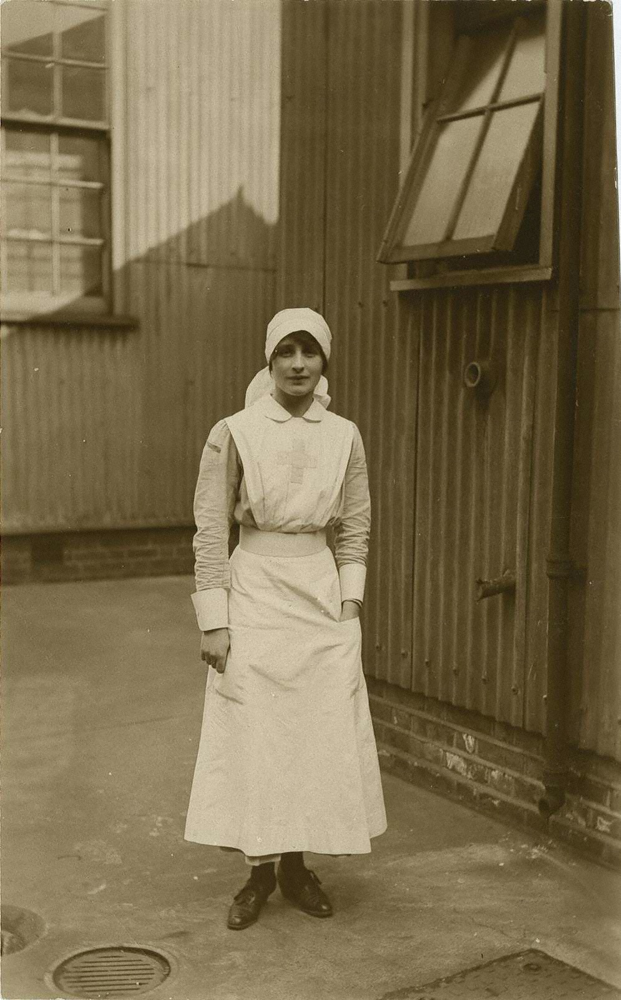
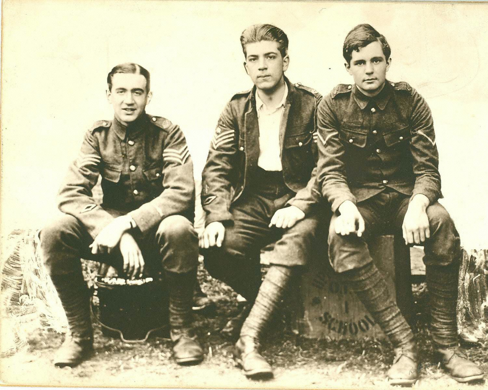
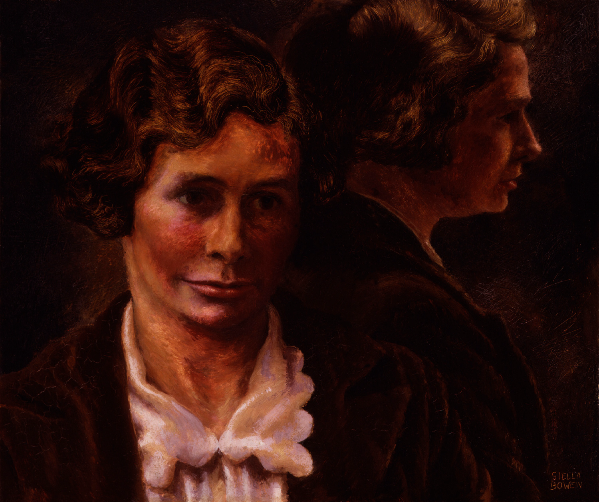
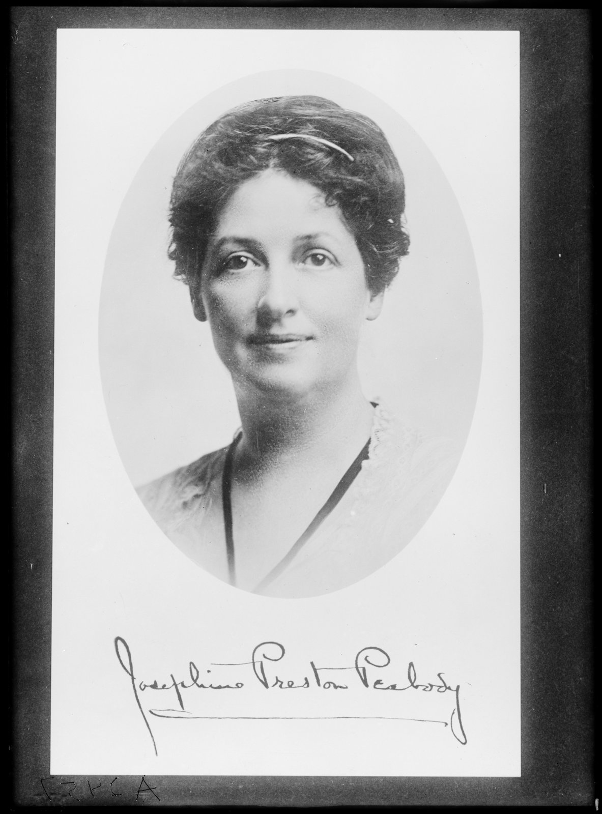

AN EXPLORATION OF REST, LOSS, AND DEATH, AND IN
SELECT POETRY BY BRITTAIN, LETTS, COLE, AND
PRESTON PEABODY
Introduction
Most literature and critical evaluation of Great War poetry focuses on male perspectives, In the 1980s, Catherine Reilly challenged the male narratives of Great War Poetry with her anthology Scars upon My Heart: Women’s Poetry and Verse of the First World War,58 a collection of poems that sheds light on a long-overlooked aspect of the Great War—the experiences of women as reflected in their poetry. Reilly confronts the traditional narrative dominated by male voices on the battlefields, revealing the war’s profound impact on women and those directly involved in war efforts on the home front.
Other works and anthologies, such as Tumult and Tears: An Anthology of Women’s First World women were nurses near the front; for example, approximately 92,094 German Red Cross women served, and a little over 19,000 were near the front lines. Also, roughly 18,000 American Red Cross nurses served with American Army and Navy nurses. During the Great War, societal expectations and limitations placed on women were significantly influenced by prevailing sociocultural norms and attitudes of the time. Traditionally viewed as property, homemakers, and caregivers, women’s roles were primarily centered around the domestic sphere. Wartime pressures, however, forced a shift in these expectations. Women were increasingly called upon to take on roles outside of the home. For example, by the end of the war, over 1.4 million German women, 3.3 million British Women, and untold numbers of women around the globe were in the workforce. Specifically, in America, over 9 million women mobilized themselves to support the 5 million American Troops.
Vera Brittain: Rest and Loss in “Roundel”
What does the date, August 4, 1914, immediately bring back to me? . . . The huge figures of the war casualties and the cost of war expenditure vanish in a phantasmagoria of human scenes and sounds. I think, instead, of names, places, and individuals, and hear above all, the echo of a boy’s laughing voice on a school playing field in that golden summer. And gradually the voice becomes one of many: the sound of the Uppingham School choir marching up the chapel for Speech Day Service in July 1914, singing the Commemoration
hymn . . . There was a thrilling, a poignant quality in those boy’s voices, as though they were singing their own requiem—as indeed many of them were.— Vera Brittain65
In the annals of twentieth-century history, the literary figure Vera Brittain (b. 1893-1970), a FIGURE 1. “Vera Brittain in Voluntary Aid Dispatchment Uniform.” The digitized Vera Brittain material may be used for educational purposes only and remains the copyright at all times of the Literary Executors for the Vera Brittain Estate, 1970 and The Vera Brittain Fonds, McMaster University Library. In any distribution or display of the material this acknowledgment must be clearly indicated. Accessed June 12, 2024, https://doi.org/10.25446/oxford.25732026.v1. Brittain would not come away from the war unscarred or unchanged. She was fully aware of the


Edward Brittain, Roland Leighton, and Victor Richardson attended Uppingham College and were called the “Three Musketeers.” After the war, Brittain resumed her education at Oxford and earned her second-class degree in 1921. Some of the psychological distress that she suffered is evident in the poem “Roundel,” written shortly after the death of her fiancé, Roland Leighton, in December 1915. In it, the young Brittain explores death, loss, and complex emotions (see table 4). TABLE 4. Vera Brittain, “Roundel,”: Form Lines Form
Quatrain
The meaning of “I shall not rest again” in “Roundel” is complex; it may mean that she will never be content or be at ease with all aspects of her life, especially with love and marriage. While the meaning of “rest” in Roundel varies from eternal rest in the Requiem, I selected the poem as one of A Great War Requiem text because it contains the word “rest.” and the poem was used in the third movement in place of what would be the Gradual: Requiem aeternam. Furthermore, I selected the poem because it explores a woman’s personal loss and grief: more specifically, losing a fiancé and herself.
Winifred Mabel Letts and “Your Name,” and “Loss,”
For England’s sake men give their lives And we cry “Brave.” But braver yet The hearts that break and live Having no more to give, Mothers, sweethearts, and wives. Let none forget Or with an averted head Pass this great sorrow by— These would, how thankfully, be dead Yet may not die.— Winifred M. Letts77
Winifred Mable Letts (1882-1972), a mostly forgotten literary figure, was an author of novels, As a writer, her most successful book was Knockmaroon (1933), a biographical novel of pastoral poetry and essays about Ireland. As a poet, she wrote several poetry collections: Songs from Leinster (1913), HallowE’en and Poems of the War (1916), The Spires of Oxford and Other Poems (1917), and More Songs from Leinster (1926). Letts was known for her simplistic and rustic style, often incorporating Irish dialects and elements of Irish Folklore, especially in her collections Songs from Leinster (1913). In addition to her rustic style, Letts incorporated Catholic phraseology in her poem “Your Name.” She received harsh criticism for her poetry, which has been labeled as “annoying” and “doggerels.” Most of her poetry and several of her books were written for children and, perhaps, need to be analyzed through that lens.
Unlike Vera Brittain, Winifred M. Letts did not write a detailed autobiographical account of her life, which has resulted in many of the details of her career and life remaining unexplored, hidden, and almost forgotten. An example of neglect is that her burial location remained unknown until 2022 because she was buried with her husband and her name was left off the headstone. Fortunately, Letts’s grand-niece, Oriana Connor, was able to help track down the plot, and memorials have been erected since in her honor. During the Great War, Letts joined the V.A.D. as a nurse near Manchester and later served as a style with the grim reality on the battlefield and nursing stations, as well as the harsh loss observed on the home front. Several of Winifred Mable Letts’s war poems, including “The Spires of Oxford” and “What Reward,” stand out in the canon of Great War Poetry for their well-crafted structure, pithy language, and sharp use of irony. Letts’s poem used in A Great War Requiem is “Your Name.” Like the other poems in her HallowE’en collection, Letts writes “Your Name” in the first person and explores loss and grief from a woman’s perspective. “Your Name” is a Petrarchan sonnet, a form that has 14 lines organized into an octave and sestet. Letts, however, makes a slight deviation from the normal form of the Petrarchan sonnet, A B B A A B B A—C D D E C E; Letts uses C D D C E E in the sestet to close the poem (See Table 5). TABLE 5. Winifred M. Letts, “Your Name,” Form Lines Form
Octave
References to war in “Your Name” imply memorialization; for example, the word “marmoreal,” made of marble, evokes the marble cenotaphs and memorials that were constructed all around the globe to pay tribute to soldiers who lost their lives in the war. Also, when Letts mentions death, she anthropomorphizes Death as a physical being. In the setting of “Your Name,” movement 6 of A Great War Requiem, the word “death” is set to the Dies Irae plainchant. Movement 6: “Your Name” primarily utilizes melodic material derived from the Sanctus plainchant, with occasional references woven in from the Requiem aeternam and Dies Irae Requiem Mass plainchants.
Margaret Cole and “Rest “and “Falling Leaves”
Dame Margaret (Postgate) Cole CBE (b. 1893 – d. 1980) was an author of novels, poetry, and FIGURE 3. “Margaret Cole in 1944-45.” Painting by Stella Bowen.” Oil on Board, 16 in. x 19 in. (406 mm x 483 mm). National Portrait Gallery, Given by John Parker (Herbert John Harvey Parker) on behalf of the Trustees of Beatrice Webb House, 1987, Primary Collection, NPG 5936, London, accessed 17 July 2023, https://www.npg.org.uk/collections/search/portrait/mw07231/Dame- Margaret-Isabel-Cole.
Cole’s life was forever changed by the Great War in 1916 when her brother Raymond Postgate was charged with being a mutinous soldier and traitor and sentenced to prison for being a conscientious objector. After the trial, Cole became more aware of politics, which ignited her passion for socialism and politics:
I did not realize until I heard the sentence pronounced and had seen Ray disappear through a kind of pantomime trap-door in the floor, what a large slice of England there was that either actively opposed to the war, or very doubtful about its conduct: but it is almost literally true that when I walked away from Oxford courtroom with Gilbert Murray . . . I walked into a new world, a world of doubters and protesters —and into a new war—this time against the ruling classes and the government which represented them, and with the working classes, the Trade

Unionists, the Irish Rebels of Easter Week, and all those who had resisted their governments or other governments which held them down. After the Great War, Cole dedicated much of her time to political activism and writing political
books and poetry. In 1918, Cole published numerous anti-war poems in Margaret Postgate’s Poems. Her satirical poem “The Falling Leaves” was one of her most popular poems and was used in A Great War Requiem because it presents anti-war sentiments from a woman’s perspective. Cole uses words such as “brown leaves” to refer to soldiers, describing what happened to the “brown leaves” in combat with lines like “Whirled them whistling to the sky” and “…fell, like snowflakes wiping out the noon.” Table 6 shows the form of Falling Leaves, which is in one sentence. TABLE 6. Margaret Cole, “Falling Leaves”: Form Lines Lines Form 1 Today, as I rode by, A 2 I saw the brown leaves dropping from their tree B 3 In a still afternoon, C 4 When no wind whirled them whistling to the sky, A 5 But thickly, silently, B 6 They fell, like snowflakes wiping out the noon; C 7 And wandered slowly thence A 8 For thinking of a gallant multitude B 9 Which now all withering lay, C 10 Slain by no wind of age or pestilence, A 11 But in their beauty strewed B 12 Like snowflakes falling on the Flemish clay. C In addition to “The Falling Leaves,” Cole’s satirical poem “Rest” is integral to A Great War deaths, soldiers that only wanted to fight for God, country, and life. The opening of the poem, lines 1-4, are reminiscent of the engravings on a soldier’s cenotaph or memorial. The word “REST” appears in upper case letters, and the repetition of “REST” exaggerates the irony of pointless deaths.
REST, REST—They say you have gained eternal rest.
REST, REST, says the brass tablet above your cenotaph, REST in some far and elderly Paradise, REST, ETERNAL REST FOR THE TIRED SPIRIT. The remaining lines of the poem, 5-15, mock the Great War myth of Pro Patria Mori idealism and with its bitter tone.
The tired spirit-yours!
This is a pleasant joke of the leading gods, Who, with such nice discrimination grant Death, and eternal rest to you who sought Nothing but life and the continuance Of the good restless striving here, The freshness of the day, the play of mind, The many wrongs you found to set to rights, The fight renewing daily with the world.
—So, they gave you eternal rest. And kept for us Life, and the peculiar pleasure of living on. I have highlighted the first four lines of the poem “Rest” in A Great War Requiem. The remaining eleven lines are included to provide context for these chosen lines. When these four lines from “Rest” are combined with the Introit Requiem aeternam in both the first and last movements, they create a kind of internal dialogue. The Introit makes a plea: “Requiem aeternam dona eis Domine et lux perpetua luceat eis” (Eternal rest grant them, Lord, and let perpetual light shine upon them). The poem’s “Rest” serves as a contrasting response, filled with anger and irony.
To visually represent the connection between the poetry and music, I have created a lyrics progression chart focusing on the alto part in movement 1, “Requiem aeterna et Rest” (see Figure 4).
tablet above your brass you 4 4 have cenotaph 2 the 4 say they 2 says 2 2 gained 2
REST eternal
8
REST
Requiem
2 eis 2 2 domine 2 aeternam 2 4 2 dona luceat et 2 2 perpetua 2 lux FIGURE 4. Kaylene Cypret, “Requiem aeternam et Rest,” Great War Requiem: Alto Lyrics progression Graph. I created the using David Pace’s Music Processing Suite software (formerly known as David Hoffman). The software integrates CoreNLP software, created by the Stanford NLP group, for the sentient analysis feature, which analyzes the sentiment polarities present in the lyrics and the sentiment analysis was used to inform the structure of the first and seventh movements. I created a graph focused on the alto part to ensure that the complete text of the movement was represented. Other parts (soprano, tenor, and bass) sometimes sing only syllables or fragments. The graph illustrates the interconnectedness of the texts “Requiem aeternam” and “Rest.”
Josephine Preston Peabody and “Harvest Moon”
Ah, but Beloved, men may do All things to music—march, and die, And wear the longest vigil through, ———And. say goodbye. All things to music!— Ah, but where
Peace never falls upon the air;-- These city-ways of dark and din Where greed has shut and barred them in! And thundering, swart against the sky, That whirlwind—never to go by— Of tracks and wheels, that overhead Beat back the senses with their roar And menace of undying war, War—war—for daily bread!— Josephine Preston Peabody
Josephine Preston Peabody (1874-1922), an American poet and playwright of remarkable breadth, emerged from a background of economic hardship to forge a multifaceted literary career (see Figure 5).

Peabody’s book, Harvest Moon, is full of anti-war poetry and memorial poetry dedicated to the women of Europe. Many of her poems, like “Harvest Moon,” capture the horrors of war. “Harvest Moon”
Over the twilight field, Over the glimmering field And bleeding furrows, with their sodden yield Of sheaves that still did writhe, After the scythe, The teeming field, and darkly over-strewn With all the garnered fullness of that noon— Two looked upon each other.
One was a Woman, men had called their mother:
And one the Harvest Moon.
And one the Harvest Moon Who stood, who gazed On those unquiet gleanings, where they bled; Till the lone Woman said:
But we were crazed … We should laugh now together, I and you; We two.
You, for your ever dreaming it was worth A star’s while to look on and light the earth; And I, forever telling to my mind Glory it was and gladness, to give birth To humankind.
I gave the breath—and thought it not amiss, I gave the breath to men, For men to slay again; Lording it over anguish, all to give My life, that men might live, For this.
You will be laughing now, remembering We called you once Dead World, and barren thing.
Yes, so we called you then, You, far more wise Than to give life to men.
Over the field that there Gave back the skies A scattered upward stare From sightless eyes, The furrowed field that lay Striving awhile, through many a bleeding dune Of throbbing clay,—but dumb and quiet soon, She looked; and went her way, The Harvest Moon. Published amidst the turmoil of the Great War, the poem “Harvest Moon” deviates from
romantic nature imagery, venturing into anti-militaristic territory. I selected this poem “Harvest Moon” for its poignant inclusion in A Great War Requiem because it exhibits several compelling qualities, such as the contrast of light and darkness, the connection to death, and the haunting text. For example, Peabody’s “Harvest Moon” infuses the war genre with a distinctly feminine viewpoint, challenging the traditionally male-dominated narratives of conflict. Her central dialogue between the Harvest Moon and the metaphorical “Lone woman” embodying motherhood and offers a profound critique of human violence and the futility of sacrifice, especially a woman’s sacrifice. In addition, the stark juxtaposition of the Harvest Moon’s celestial beauty with the ravaged battlefield in lines “bleeding furrows,” “unquiet gleanings, where they bled,” and “sightless eyes” heightens the sense of desolation and senseless tragedy. The use of evocative language is what makes “Harvest Moon” a profound example of Great War poetry.
Peabody’s “Harvest Moon” exemplifies a powerful and mature feminine voice that challenges Moon” to be used in the dissertation composition because of its thematic power. The text’s unsettling imagery, with references to the “scythe,” “sightless eyes,” and “throbbing clay,” is evocative of the Dies Irae’s text of death and judgment. Moreover, “Harvest Moon” possesses a haunting lyrical quality. Its long length, rhythmic structure, rhyming structure, and the pace of its lines made it a well-suited choice for the Sequence movement of A Great War Requiem.
Conclusion
The ensuing investigative study challenges the traditional canon of Great War poetry by foregrounding the often-neglected contributions of women poets. Scholarship has traditionally focused on the perspectives of male combatants, but the brief investigative study sheds light on the valuable artistic and social insights that can be gained from analyzing the works of four influential female literary figures: Vera Brittain, Winifred Mabel Letts, Margaret Cole, and Josephine Preston Peabody.
Brittain’s unflinching poem “Roundel” dissects personal grief and trauma, revealing the war’s devastating emotional toll. Letts’s work, infused with religious, pagan, and Irish folk sensibilities, explores themes of loss and sacrifice in the poem “Your Name.” Letts’s poem also captures the enduring pain reverberating throughout families and communities, especially the pain of women.
Margaret Cole’s poetry, fueled by her brother’s conscientious objection, takes a fiercely satirical By including women’s essential voices in artworks, music, and literary scholarship, we gain a richer tapestry of war’s complexities. Women’s experiences encompassed not only the anxieties of those in the domestic sphere, but also the realities of wartime labor, displacement, and grief. Their poetry explores the war’s profound societal impact, disrupting romanticized notions of heroism, exposing the toll that war takes on families, communities, and humanity, and offering nuanced explorations of war’s psychological and emotional reverberations on individual lives.
Notes
- 57. Kendall, Tim, Poetry of the First World War: An Anthology (Oxford: Oxford University Press, 2013); Jon Stallworthy, The New Oxford Book of War Poetry (Oxford: Oxford University Press, 2014);Wilfred Owen, The War Poems of Wilfred Owen, 1964; David Goldie and Roerick Wilson, eds., From the Line: Scottish War Poetry 1914-1945 (Glasgow: Association for Scottish Literary Studies, 2014); Siegfried Sassoon, War Poems by Siegfried Sassoon [1919] (Mineola, New York, Dover Publications, Inc., 2004); and Rupert Brooke, The Poems of Rupert Brook, edited by George Edward Woodberry (New York: Dodd, Mead, and Company, 1924).
- 58. Catherine Reilly, Scars Upon My Heart: Women’s Poetry & Verse of the First World War (London: Virago Press, 1981).
- 59. Vivien Newman, ed., Tumult & Tears: An Anthology of Women's First World War Poetry (London: Pen & Sword Military, 2016); Elaine Feeney, ed., War Words: Women Poets of the First World War (London: Alma Classics, 2014); and Sara Haslam, ed., The Cambridge Companion to Women's Writing of the First World War (Cambridge: Cambridge University Press, 2016).
- 60. See the following sources on women’s experiences and contributions to the Great War: Allison Berg, “The Great War and the War at Home: Gender Battles in Flags in the Dust and the Unvanquished,” Women’s Studies: An Interdisciplinary Journal 22, no. 4 (1993); 441-453; Susan R. Grayzel, Women and the First World War: Taylor & Francis (London: Routledge, 2013); Susan R. Grayzel, Women’s Identities at War: Gender, Motherhood, and Politics in Britain and France during the First World War (Chapel Hill:University of North Carolina Press Books, 2014); Susan R. Grayzel, and Tammy M. Proctor, Gender and the Great War (New York: Oxford University Press, 2017).
- 61. Ludwig Kimmle, Das Deutsche Rote Kreuz im Weltkrieg (Berlin: Grund, 1919), 12.
- 62. Library of Congress, “Red Cross and World War I: Guides,” accessed 30 January 2024, https://guides.loc.gov/ american-women-manuscript/health-and-medicine/red-cross-and-world-wari#:~:text=During%20the%20First%20World %20War,Army%20and%20Navy%20Nurse%20Corps; Marian Moser Jones, “American Nurses in World War I: Under- Appreciated and Under Fire,” American Experience, (n.d.), accessed January 12, 2024; https://www.pbs.org/wgbh/american experience/features/the-great-war-american-nurses-world-war-1/#:~:text=Over%2022%2C000%20professionally%2 Dtrained%20female,for%20the%20American%20Red%20Cross.
- 63. “Women in WWI,” National WWI Museum and Memorial, July 25, 2018; https://www.theworldwar.org/ learn/women.
- 64. “Women in World War I,” National Park Service, December 16, 2020; https://www.nps.gov/articles/women-in- world-war-i.htm.
- 65. Paul Berry and Mark Bostrage, Vera Brittain: A Life [1995] (Surrey, Great Britain: Virago Press, 2001), 58.
- 66. Vera Brittian, Testament of Youth: An Autobiographical Study of the Years 1900-1925, With a Preface by the Right Honorable Shirley Williams [1933] (New York: Penguin Books, 1989.
- 67. Brittian, Testament of Youth, 167.
- 68. Brittian, Testament of Youth, 167.
- 69. Project Team, First World War Poetry Digital Archive, “51315: Vera Brittain in V. A. D. uniform,” University of Oxford, Online resource, 2024, https://doi.org/10.25446/oxford.25732026.v1.
- 70. “Vera Brittain in V. A. D. uniform,” University of Oxford, online resource.
- 71. Brittain, Testament of Youth, 347, 356, 357, 444.
- 72. Elizabeth Day, ed., “Testament of Youth: Vera Brittain’s Classic, 80 Years On,” The Observer, March 24, 2013; https://www.theguardian.com/books/2013/mar/24/vera-brittain-testament-of-youth.
- 73. Project Team, First World War Poetry Digital Archive, “51386: Edward Brittain, Roland Leighton, and Victor Richardson,” University of Oxford, online Resource, 2024; accessed December 12, 2023, https://doi.org/10.25446/oxford. 25781211.v1.
- 74. “Vera Mary Brittain,” Poetry Foundation, March 13, 2020, https://www.poetryfoundation.org/poets/vera-mary- brittain.
- 75. Brittain, Verses of V.A.D., 28.
- 76. “Rondel (Roundel),” Poetry Foundation, July 11, 2022, https://www.poetryfoundation.org/learn/ glossary- terms/rondel-roundel.
- 77. Letts, Hallow-E’en, and Poems of the War, 34.
- 78. Diarmaid Ferriter, “Letts, Winifred Mabel,” Dictionary of Irish Biography, updated June 2021, https://www.dib.ie/biography/letts-winifred-mabel-a4813.
- 79. Patrick Comerford, “Poems for Lent (14): ‘In the Street,’ by Winifred M Letts,” Patrickcomerford.com, updated March 9, 2012, https://www.patrickcomerford.com/2012/03/poems-for-lent-14-in-street-by-winifred.html.
- 80. Bairbre O’Hogan, “Female Poets of the First World War,” Female War Poets, July 12, 2022, https://femalewarpoets. blogspot.com/2022/07/a-message-from-bairbre-ohogan-about.html.
- 81. Letts, HallowE’en, 34.
- 82. Lucy London, Female Poets of the First World War, vol. 1, edited by Paul Breeze (Blackpool, Great Britain: Posh Up North Publishing, 2013), 18-19.
- 83. See “Spires of Oxford,” and “What Reward” in Letts, HallowE’en, 8, 12.
- 84. Letts, HallowE’en, 36.
- 85. Letts, HallowE’en, 36.
- 86. Betty D. Vernon, Margaret Cole, 1893-1980: A Political Biography (London: Croom Helm, 1986), 10.
- 87. Vernon, Margaret Cole, 10.
- 88. Margaret Cole, Margaret Postgate’s Poems; Margaret Cole, The New Economic Revolution (Phoenix, AZ: Phoenix Book Company, 1937); Margaret Cole, Makers of the Labor Movement (London: Longmans, 1948); Margaret Cole, Growing Up into Revolution (London: Longmans, 1949); Margaret Cole, The Life of G. D. H. Cole (London: Macmillian, 1971).
- 89. Vernon, Margaret Cole, 24.
- 90. Cole, Margaret Postgate’s Poems, 34.
- 91. Cole, Margaret Postgate’s Poems, 34.
- 92. Cole, Margaret Postgate’s Poems, 34.
- 93. Cole uses italic text on lines 5-15; Cole, Margaret Postgate’s Poems, 34.
- 94. Cole, Margaret Postgate’s Poems, 34.
- 95. For more on 1st Earl Horatio Herbert Kitchener, see “Horatio Herbert Kitchener, 1st Earl Kitchener,” Encyclopedia Britannica, January 19, 2024, https://www.britannica.com/biography/Horatio-Herbert-Kitchener-1st-Earl- Kitchener.
- 96. Harris & Ewing, photographer, “Josephine Preston Peabody,” United States, c. 1921, photograph, [in public domain] https://www.loc.gov/item/2016885638/.
- 97. John Nickel, "Josephine Preston Peabody," in Twentieth-Century American Dramatists: Third Series, ed. Christopher J. Wheatley (Detroit, MI: Gale, 2002).
- 98. See “Josephine Preston Peabody,” Encyclopedia Britannica, November 30, 2023, https://www.britannica.com/ biography/Josephine-Preston-Peabody; Josephine Preston Peabody, The Piper , a Play in Four Acts (Boston: Mifflin Co., 1911); Josephine Preston Peabody, Portrait of Mrs. W.: A play in Three Acts with an Epilogue (Boston: Houghton Mifflin Co., 1922.
- 99. Preston Peabody, Harvest Moon, 84-85.
- 100. Preston Peabody, Harvest Moon, 84-85.
- 101. Preston Peabody, Harvest Moon, 84.